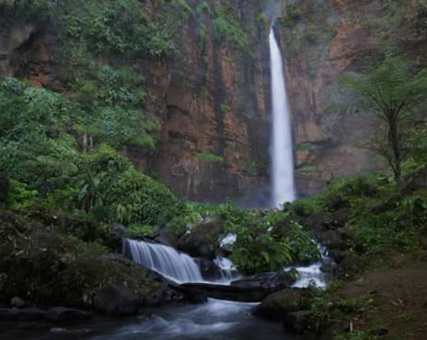

Air Terjun Batang Kapas
Air Terjun Batang Kapas
Lokasi wisata Air Terjun Batang Kapas ini terletak di Desa Lubuk Bigau, Kecamatan Kampar Kiri Hulu, Kampar. Air terjun batang kapas merupakan air terjun tertinggi yang ada di Sumatera bagian tengah, sekitar 150 meter. Ketika dilihat dari kejauhan, maka air terjun yang satu ini terlihat begitu megah dengan bebatuan putihnya. Selain itu, Anda dapat menikmati ketenangan alam yang masih begitu asri dan alami dengan ditemani oleh suara air yang bergemuruh. Tentunya ini akan menjadi pengalaman yang sangat menyenangkan untuk anda. Jika anda sangat menyukai tantangan, maka anda juga dapat melakukan camping di sekitar area air terjun. Dari dasar air terjun sudah terlihat lanskap yang indah. Melihat kearah bukit diantara air terjun, terlihat seperti ukiran-ukiran buatan manusia, ukiran ini membentuk relief dengan garis-garis dari lapisan batu. Ditengah bukit terdapat celah yang sering dijadikan tempat bermalam oleh para pendaki atau warga yang berburu burung disekitar air terjun. Diatas langit-langit bukit, terdapat puluhan sarang lebah yang menjadi salah satu komoditi unggulan dari masyarakat sekitar desa Lubuk Bigau Untuk mengunjungi Air Terjun Batang Kapas menggunakan mobil, dari Kota Pekanbaru dapat melalui Desa Lipat Kain dengan waktu tempuh 2 jam perjalanan atau 71 km (Aspal). Selanjutnya perjalanan dilanjutkan menuju Desa Lubuk Bigau, ada beberapa desa yang akan dilewati diantaranya Desa Sontul, Tanjung Karang, Deras Tajak, dan Desa Batu Sasak. Setelah sampai di Desa Lubuk Bigau jarak tempuh untuk menuju Air Terjun Batang Kapas diperkirakan 4-5 km. Anda dapat menggunakan jasa ojek sepeda motor yang disediakan oleh masyarakat desa setempat dengan waktu tempuh 15 menit. Lalu dilanjutkan berjalan kaki melewati hutan belantara dengan waktu tempuh 3 jam.